Matbiips example: Switching Stochastic volatility
In this example, we consider the Markov switching stochastic volatility model for application e.g. in finance.
Reference: C.M. Carvalho and H.F. Lopes. Simulation-based sequential analysis of Markov switching stochastic volatility models. Computational Statistics and Data analysis (2007) 4526-4542.
Contents
Statistical model
Let  be the response variable and
be the response variable and  the unobserved log-volatility of . The stochastic volatility model is defined as follows for
the unobserved log-volatility of . The stochastic volatility model is defined as follows for 


The regime variables  follow a two-state Markov process with transition probabilities
follow a two-state Markov process with transition probabilities

We assume the following priors over the parameters 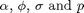:
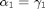
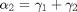
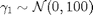
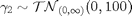
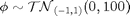
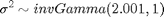
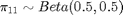
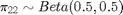
 denotes the normal distribution of mean
denotes the normal distribution of mean  and variance
and variance  . 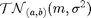 denotes the truncated normal distribution of mean and variance .
. 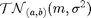 denotes the truncated normal distribution of mean and variance .
Statistical model in BUGS language
Content of the file `switch_stoch_volatility.bug':
var y[t_max,1], x[t_max,1], prec_y[t_max,1],mu[t_max,1],mu_true[t_max,1],alpha[2,1],gamma[2,1],c[t_max],c_true[t_max],pi[2,2]
data
{
c_true[1] ~ dcat(pi_true[1,])
mu_true[1,1] <- alpha_true[1,1] * (c_true[1]==1) + alpha_true[2,1]*(c_true[1]==2)
x_true[1,1] ~ dnorm(mu_true[1,1], 1/sigma_true^2)
prec_y_true[1,1] <- exp(-x_true[1,1])
y[1,1] ~ dnorm(0, prec_y_true[1,1])
for (t in 2:t_max)
{
c_true[t] ~ dcat(ifelse(c_true[t-1]==1,pi_true[1,],pi_true[2,]))
mu_true[t,1] <- alpha_true[1,1]*(c_true[t]==1) + alpha_true[2,1]*(c_true[t]==2) + phi_true*x_true[t-1,1];
x_true[t,1] ~ dnorm(mu_true[t,1], 1/sigma_true^2)
prec_y_true[t,1] <- exp(-x_true[t,1])
y[t,1] ~ dnorm(0, prec_y_true[t,1])
}
} model
{
gamma[1,1] ~ dnorm(0, 1/100)
gamma[2,1] ~ dnorm(0, 1/100)T(0,)
alpha[1,1] <- gamma[1,1]
alpha[2,1] <- gamma[1,1] + gamma[2,1]
phi ~ dnorm(0, 1/100)T(-1,1)
tau ~ dgamma(2.001, 1)
sigma <- 1/sqrt(tau)
pi[1,1] ~ dbeta(.5, .5)
pi[1,2] <- 1.00 - pi[1,1]
pi[2,2] ~ dbeta(.5, .5)
pi[2,1] <- 1.00 - pi[2,2] c[1] ~ dcat(pi[1,])
mu[1,1] <- alpha[1,1] * (c[1]==1) + alpha[2,1]*(c[1]==2)
x[1,1] ~ dnorm(mu[1,1], 1/sigma^2)
prec_y[1,1] <- exp(-x[1,1])
y[1,1] ~ dnorm(0, prec_y[1,1])
for (t in 2:t_max)
{
c[t] ~ dcat(ifelse(c[t-1]==1, pi[1,], pi[2,]))
mu[t,1] <- alpha[1,1] * (c[t]==1) + alpha[2,1]*(c[t]==2) + phi*x[t-1,1]
x[t,1] ~ dnorm(mu[t,1], 1/sigma^2)
prec_y[t,1] <- exp(-x[t,1])
y[t,1] ~ dnorm(0, prec_y[t,1])
}
}Installation of Matbiips
Unzip the Matbiips archive in some folder and add the Matbiips folder to the Matlab path
matbiips_path = '../../matbiips/matlab';
addpath(matbiips_path)
Load model and load or simulate data
sample_data = true; % Simulated data or SP500 data t_max = 200; if ~sample_data % Load the data T = readtable('SP500.csv', 'delimiter', ';'); y = diff(log(T.Close(end:-1:1))); SP500_date_str = T.Date(end:-1:2); ind = 1:t_max; y = y(ind); SP500_date_str = SP500_date_str(ind); SP500_date_num = datenum(SP500_date_str); % Plot the SP500 data figure('name', 'log-returns') plot(SP500_date_num, y) datetick('x', 'mmmyyyy', 'keepticks') ylabel('log-returns') end
Model parameters
if ~sample_data data = struct('t_max', t_max, 'y', y); else sigma_true = .4; alpha_true = [-2.5; -1]; phi_true = .5; pi11 = .9; pi22 = .9; pi_true = [ pi11, 1-pi11; 1-pi22, pi22]; data = struct('t_max', t_max, 'sigma_true', sigma_true,... 'alpha_true', alpha_true, 'phi_true', phi_true, 'pi_true', pi_true); end
Start BiiPS console
biips_init;
Compile BUGS model and sample data if simulated data
model = 'switch_stoch_volatility.bug'; % BUGS model filename [model_id, data] = biips_model(model, data, 'sample_data', sample_data); % Create biips model and sample data
* Parsing model in: switch_stoch_volatility.bug * Compiling data graph Declaring variables Resolving undeclared variables Allocating nodes Graph size: 2412 Sampling data Reading data back into data table * Compiling model graph Declaring variables Resolving undeclared variables Allocating nodes Graph size: 2430
BiiPS Particle Marginal Metropolis-Hastings
We now use BiiPS to run a Particle Marginal Metropolis-Hastings in order to obtain posterior MCMC samples of the parameters \alpha, \beta and \sigma, and of the variables x.
Parameters of the PMMH
n_burn = 20000; % nb of burn-in/adaptation iterations n_iter = 20000; % nb of iterations after burn-in thin = 20; % thinning of MCMC outputs n_part = 50; % nb of particles for the SMC param_names = {'gamma[1,1]','gamma[2,1]', 'phi', 'tau', 'pi[1,1]', 'pi[2,2]'}; % name of the variables updated with MCMC (others are updated with SMC) latent_names = {'x','alpha[1,1]','alpha[2,1]', 'sigma'}; % name of the variables updated with SMC and that need to be monitored
Init PMMH
inits = {-1, 1,.5,5,.8,.8};
obj_pmmh = biips_pmmh_object(model_id, param_names, 'inits', inits); % creates a pmmh object
% pause
Run PMMH
[obj_pmmh, stats_pmmh_update] = biips_pmmh_update(obj_pmmh, n_burn, n_part); % adaptation and burn-in iterations [out_pmmh, log_post, log_marg_like, stats_pmmh] = biips_pmmh_samples(obj_pmmh, n_iter, n_part,... 'thin', thin, 'latent_names', latent_names); % Samples
* Initializing PMMH * Adapting PMMH with 50 particles |--------------------------------------------------| 100% |+++++++++++++++++++++++++++++++++++Warning: LOGIC ERROR: Invalid parameters values for function sqrt ++Warning: LOGIC ERROR: Invalid parameters values for function sqrt Warning: LOGIC ERROR: Invalid parameters values for function sqrt Warning: LOGIC ERROR: Invalid parameters values for function sqrt +Warning: LOGIC ERROR: Invalid parameters values for function sqrt Warning: LOGIC ERROR: Invalid parameters values for function sqrt Warning: LOGIC ERROR: Invalid parameters values for function sqrt Warning: LOGIC ERROR: Invalid parameters values for function sqrt Warning: LOGIC ERROR: Invalid parameters values for function sqrt Warning: LOGIC ERROR: Invalid parameters values for function sqrt Warning: LOGIC ERROR: Invalid parameters values for function sqrt Warning: LOGIC ERROR: Invalid parameters values for function sqrt Warning: LOGIC ERROR: Invalid parameters values for function sqrt Warning: LOGIC ERROR: Invalid parameters values for function sqrt Warning: LOGIC ERROR: Invalid parameters values for function sqrt Warning: LOGIC ERROR: Invalid parameters values for function sqrt Warning: LOGIC ERROR: Invalid parameters values for function sqrt Warning: LOGIC ERROR: Invalid parameters values for function sqrt Warning: LOGIC ERROR: Invalid parameters values for function sqrt Warning: LOGIC ERROR: Invalid parameters values for function sqrt Warning: LOGIC ERROR: Invalid parameters values for function sqrt Warning: LOGIC ERROR: Invalid parameters values for function sqrt Warning: LOGIC ERROR: Invalid parameters values for function sqrt +Warning: LOGIC ERROR: Invalid parameters values for function sqrt Warning: LOGIC ERROR: Invalid parameters values for function sqrt Warning: LOGIC ERROR: Invalid parameters values for function sqrt ++Warning: LOGIC ERROR: Invalid parameters values for function sqrt Warning: LOGIC ERROR: Invalid parameters values for function sqrt Warning: LOGIC ERROR: Invalid parameters values for function sqrt Warning: LOGIC ERROR: Invalid parameters values for function sqrt +Warning: LOGIC ERROR: Invalid parameters values for function sqrt Warning: LOGIC ERROR: Invalid parameters values for function sqrt Warning: LOGIC ERROR: Invalid parameters values for function sqrt Warning: LOGIC ERROR: Invalid parameters values for function sqrt Warning: LOGIC ERROR: Invalid parameters values for function sqrt Warning: LOGIC ERROR: Invalid parameters values for function sqrt Warning: LOGIC ERROR: Invalid parameters values for function sqrt Warning: LOGIC ERROR: Invalid parameters values for function sqrt Warning: LOGIC ERROR: Invalid parameters values for function sqrt Warning: LOGIC ERROR: Invalid parameters values for function sqrt +Warning: LOGIC ERROR: Invalid parameters values for function sqrt Warning: LOGIC ERROR: Invalid parameters values for function sqrt Warning: LOGIC ERROR: Invalid parameters values for function sqrt Warning: LOGIC ERROR: Invalid parameters values for function sqrt Warning: LOGIC ERROR: Invalid parameters values for function sqrt Warning: LOGIC ERROR: Invalid parameters values for function sqrt Warning: LOGIC ERROR: Invalid parameters values for function sqrt Warning: LOGIC ERROR: Invalid parameters values for function sqrt Warning: LOGIC ERROR: Invalid parameters values for function sqrt Warning: LOGIC ERROR: Invalid parameters values for function sqrt Warning: LOGIC ERROR: Invalid parameters values for function sqrt Warning: LOGIC ERROR: Invalid parameters values for function sqrt Warning: LOGIC ERROR: Invalid parameters values for function sqrt Warning: LOGIC ERROR: Invalid parameters values for function sqrt Warning: LOGIC ERROR: Invalid parameters values for function sqrt Warning: LOGIC ERROR: Invalid parameters values for function sqrt Warning: LOGIC ERROR: Invalid parameters values for function sqrt Warning: LOGIC ERROR: Invalid parameters values for function sqrt Warning: LOGIC ERROR: Invalid parameters values for function sqrt Warning: LOGIC ERROR: Invalid parameters values for function sqrt Warning: LOGIC ERROR: Invalid parameters values for function sqrt Warning: LOGIC ERROR: Invalid parameters values for function sqrt Warning: LOGIC ERROR: Invalid parameters values for function sqrt Warning: LOGIC ERROR: Invalid parameters values for function sqrt Warning: LOGIC ERROR: Invalid parameters values for function sqrt Warning: LOGIC ERROR: Invalid parameters values for function sqrt Warning: LOGIC ERROR: Invalid parameters values for function sqrt Warning: LOGIC ERROR: Invalid parameters values for function sqrt Warning: LOGIC ERROR: Invalid parameters values for function sqrt Warning: LOGIC ERROR: Invalid parameters values for function sqrt Warning: LOGIC ERROR: Invalid parameters values for function sqrt Warning: LOGIC ERROR: Invalid parameters values for function sqrt Warning: LOGIC ERROR: Invalid parameters values for function sqrt Warning: LOGIC ERROR: Invalid parameters values for function sqrt Warning: LOGIC ERROR: Invalid parameters values for function sqrt Warning: LOGIC ERROR: Invalid parameters values for function sqrt Warning: LOGIC ERROR: Invalid parameters values for function sqrt Warning: LOGIC ERROR: Invalid parameters values for function sqrt Warning: LOGIC ERROR: Invalid parameters values for function sqrt Warning: LOGIC ERROR: Invalid parameters values for function sqrt Warning: LOGIC ERROR: Invalid parameters values for function sqrt Warning: LOGIC ERROR: Invalid parameters values for function sqrt Warning: LOGIC ERROR: Invalid parameters values for function sqrt Warning: LOGIC ERROR: Invalid parameters values for function sqrt Warning: LOGIC ERROR: Invalid parameters values for function sqrt Warning: LOGIC ERROR: Invalid parameters values for function sqrt Warning: LOGIC ERROR: Invalid parameters values for function sqrt Warning: LOGIC ERROR: Invalid parameters values for function sqrt Warning: LOGIC ERROR: Invalid parameters values for function sqrt Warning: LOGIC ERROR: Invalid parameters values for function sqrt +Warning: LOGIC ERROR: Invalid parameters values for function sqrt Warning: LOGIC ERROR: Invalid parameters values for function sqrt Warning: LOGIC ERROR: Invalid parameters values for function sqrt Warning: LOGIC ERROR: Invalid parameters values for function sqrt Warning: LOGIC ERROR: Invalid parameters values for function sqrt Warning: LOGIC ERROR: Invalid parameters values for function sqrt Warning: LOGIC ERROR: Invalid parameters values for function sqrt Warning: LOGIC ERROR: Invalid parameters values for function sqrt Warning: LOGIC ERROR: Invalid parameters values for function sqrt Warning: LOGIC ERROR: Invalid parameters values for function sqrt Warning: LOGIC ERROR: Invalid parameters values for function sqrt Warning: LOGIC ERROR: Invalid parameters values for function sqrt Warning: LOGIC ERROR: Invalid parameters values for function sqrt Warning: LOGIC ERROR: Invalid parameters values for function sqrt Warning: LOGIC ERROR: Invalid parameters values for function sqrt Warning: LOGIC ERROR: Invalid parameters values for function sqrt Warning: LOGIC ERROR: Invalid parameters values for function sqrt Warning: LOGIC ERROR: Invalid parameters values for function sqrt Warning: LOGIC ERROR: Invalid parameters values for function sqrt Warning: LOGIC ERROR: Invalid parameters values for function sqrt Warning: LOGIC ERROR: Invalid parameters values for function sqrt Warning: LOGIC ERROR: Invalid parameters values for function sqrt Warning: LOGIC ERROR: Invalid parameters values for function sqrt Warning: LOGIC ERROR: Invalid parameters values for function sqrt Warning: LOGIC ERROR: Invalid parameters values for function sqrt Warning: LOGIC ERROR: Invalid parameters values for function sqrt Warning: LOGIC ERROR: Invalid parameters values for function sqrt Warning: LOGIC ERROR: Invalid parameters values for function sqrt Warning: LOGIC ERROR: Invalid parameters values for function sqrt Warning: LOGIC ERROR: Invalid parameters values for function sqrt Warning: LOGIC ERROR: Invalid parameters values for function sqrt Warning: LOGIC ERROR: Invalid parameters values for function sqrt Warning: LOGIC ERROR: Invalid parameters values for function sqrt Warning: LOGIC ERROR: Invalid parameters values for function sqrt Warning: LOGIC ERROR: Invalid parameters values for function sqrt Warning: LOGIC ERROR: Invalid parameters values for function sqrt Warning: LOGIC ERROR: Invalid parameters values for function sqrt Warning: LOGIC ERROR: Invalid parameters values for function sqrt Warning: LOGIC ERROR: Invalid parameters values for function sqrt Warning: LOGIC ERROR: Invalid parameters values for function sqrt Warning: LOGIC ERROR: Invalid parameters values for function sqrt Warning: LOGIC ERROR: Invalid parameters values for function sqrt Warning: LOGIC ERROR: Invalid parameters values for function sqrt Warning: LOGIC ERROR: Invalid parameters values for function sqrt Warning: LOGIC ERROR: Invalid parameters values for function sqrt Warning: LOGIC ERROR: Invalid parameters values for function sqrt Warning: LOGIC ERROR: Invalid parameters values for function sqrt Warning: LOGIC ERROR: Invalid parameters values for function sqrt Warning: LOGIC ERROR: Invalid parameters values for function sqrt Warning: LOGIC ERROR: Invalid parameters values for function sqrt Warning: LOGIC ERROR: Invalid parameters values for function sqrt Warning: LOGIC ERROR: Invalid parameters values for function sqrt Warning: LOGIC ERROR: Invalid parameters values for function sqrt Warning: LOGIC ERROR: Invalid parameters values for function sqrt Warning: LOGIC ERROR: Invalid parameters values for function sqrt Warning: LOGIC ERROR: Invalid parameters values for function sqrt Warning: LOGIC ERROR: Invalid parameters values for function sqrt Warning: LOGIC ERROR: Invalid parameters values for function sqrt +Warning: LOGIC ERROR: Invalid parameters values for function sqrt Warning: LOGIC ERROR: Invalid parameters values for function sqrt Warning: LOGIC ERROR: Invalid parameters values for function sqrt Warning: LOGIC ERROR: Invalid parameters values for function sqrt Warning: LOGIC ERROR: Invalid parameters values for function sqrt Warning: LOGIC ERROR: Invalid parameters values for function sqrt Warning: LOGIC ERROR: Invalid parameters values for function sqrt Warning: LOGIC ERROR: Invalid parameters values for function sqrt Warning: LOGIC ERROR: Invalid parameters values for function sqrt Warning: LOGIC ERROR: Invalid parameters values for function sqrt Warning: LOGIC ERROR: Invalid parameters values for function sqrt Warning: LOGIC ERROR: Invalid parameters values for function sqrt +Warning: LOGIC ERROR: Invalid parameters values for function sqrt Warning: LOGIC ERROR: Invalid parameters values for function sqrt Warning: LOGIC ERROR: Invalid parameters values for function sqrt Warning: LOGIC ERROR: Invalid parameters values for function sqrt Warning: LOGIC ERROR: Invalid parameters values for function sqrt Warning: LOGIC ERROR: Invalid parameters values for function sqrt Warning: LOGIC ERROR: Invalid parameters values for function sqrt Warning: LOGIC ERROR: Invalid parameters values for function sqrt Warning: LOGIC ERROR: Invalid parameters values for function sqrt Warning: LOGIC ERROR: Invalid parameters values for function sqrt Warning: LOGIC ERROR: Invalid parameters values for function sqrt Warning: LOGIC ERROR: Invalid parameters values for function sqrt Warning: LOGIC ERROR: Invalid parameters values for function sqrt Warning: LOGIC ERROR: Invalid parameters values for function sqrt Warning: LOGIC ERROR: Invalid parameters values for function sqrt Warning: LOGIC ERROR: Invalid parameters values for function sqrt Warning: LOGIC ERROR: Invalid parameters values for function sqrt Warning: LOGIC ERROR: Invalid parameters values for function sqrt Warning: LOGIC ERROR: Invalid parameters values for function sqrt Warning: LOGIC ERROR: Invalid parameters values for function sqrt Warning: LOGIC ERROR: Invalid parameters values for function sqrt Warning: LOGIC ERROR: Invalid parameters values for function sqrt +Warning: LOGIC ERROR: Invalid parameters values for function sqrt Warning: LOGIC ERROR: Invalid parameters values for function sqrt Warning: LOGIC ERROR: Invalid parameters values for function sqrt Warning: LOGIC ERROR: Invalid parameters values for function sqrt Warning: LOGIC ERROR: Invalid parameters values for function sqrt Warning: LOGIC ERROR: Invalid parameters values for function sqrt Warning: LOGIC ERROR: Invalid parameters values for function sqrt Warning: LOGIC ERROR: Invalid parameters values for function sqrt Warning: LOGIC ERROR: Invalid parameters values for function sqrt Warning: LOGIC ERROR: Invalid parameters values for function sqrt Warning: LOGIC ERROR: Invalid parameters values for function sqrt Warning: LOGIC ERROR: Invalid parameters values for function sqrt Warning: LOGIC ERROR: Invalid parameters values for function sqrt Warning: LOGIC ERROR: Invalid parameters values for function sqrt Warning: LOGIC ERROR: Invalid parameters values for function sqrt Warning: LOGIC ERROR: Invalid parameters values for function sqrt Warning: LOGIC ERROR: Invalid parameters values for function sqrt Warning: LOGIC ERROR: Invalid parameters values for function sqrt Warning: LOGIC ERROR: Invalid parameters values for function sqrt Warning: LOGIC ERROR: Invalid parameters values for function sqrt Warning: LOGIC ERROR: Invalid parameters values for function sqrt Warning: LOGIC ERROR: Invalid parameters values for function sqrt Warning: LOGIC ERROR: Invalid parameters values for function sqrt Warning: LOGIC ERROR: Invalid parameters values for function sqrt Warning: LOGIC ERROR: Invalid parameters values for function sqrt Warning: LOGIC ERROR: Invalid parameters values for function sqrt Warning: LOGIC ERROR: Invalid parameters values for function sqrt Warning: LOGIC ERROR: Invalid parameters values for function sqrt Warning: LOGIC ERROR: Invalid parameters values for function sqrt Warning: LOGIC ERROR: Invalid parameters values for function sqrt Warning: LOGIC ERROR: Invalid parameters values for function sqrt +Warning: LOGIC ERROR: Invalid parameters values for function sqrt Warning: LOGIC ERROR: Invalid parameters values for function sqrt Warning: LOGIC ERROR: Invalid parameters values for function sqrt Warning: LOGIC ERROR: Invalid parameters values for function sqrt Warning: LOGIC ERROR: Invalid parameters values for function sqrt Warning: LOGIC ERROR: Invalid parameters values for function sqrt Warning: LOGIC ERROR: Invalid parameters values for function sqrt Warning: LOGIC ERROR: Invalid parameters values for function sqrt Warning: LOGIC ERROR: Invalid parameters values for function sqrt Warning: LOGIC ERROR: Invalid parameters values for function sqrt Warning: LOGIC ERROR: Invalid parameters values for function sqrt Warning: LOGIC ERROR: Invalid parameters values for function sqrt Warning: LOGIC ERROR: Invalid parameters values for function sqrt Warning: LOGIC ERROR: Invalid parameters values for function sqrt Warning: LOGIC ERROR: Invalid parameters values for function sqrt Warning: LOGIC ERROR: Invalid parameters values for function sqrt Warning: LOGIC ERROR: Invalid parameters values for function sqrt Warning: LOGIC ERROR: Invalid parameters values for function sqrt Warning: LOGIC ERROR: Invalid parameters values for function sqrt Warning: LOGIC ERROR: Invalid parameters values for function sqrt Warning: LOGIC ERROR: Invalid parameters values for function sqrt Warning: LOGIC ERROR: Invalid parameters values for function sqrt Warning: LOGIC ERROR: Invalid parameters values for function sqrt Warning: LOGIC ERROR: Invalid parameters values for function sqrt Warning: LOGIC ERROR: Invalid parameters values for function sqrt Warning: LOGIC ERROR: Invalid parameters values for function sqrt Warning: LOGIC ERROR: Invalid parameters values for function sqrt Warning: LOGIC ERROR: Invalid parameters values for function sqrt Warning: LOGIC ERROR: Invalid parameters values for function sqrt Warning: LOGIC ERROR: Invalid parameters values for function sqrt Warning: LOGIC ERROR: Invalid parameters values for function sqrt +Warning: LOGIC ERROR: Invalid parameters values for function sqrt Warning: LOGIC ERROR: Invalid parameters values for function sqrt Warning: LOGIC ERROR: Invalid parameters values for function sqrt Warning: LOGIC ERROR: Invalid parameters values for function sqrt Warning: LOGIC ERROR: Invalid parameters values for function sqrt Warning: LOGIC ERROR: Invalid parameters values for function sqrt Warning: LOGIC ERROR: Invalid parameters values for function sqrt Warning: LOGIC ERROR: Invalid parameters values for function sqrt Warning: LOGIC ERROR: Invalid parameters values for function sqrt Warning: LOGIC ERROR: Invalid parameters values for function sqrt Warning: LOGIC ERROR: Invalid parameters values for function sqrt Warning: LOGIC ERROR: Invalid parameters values for function sqrt Warning: LOGIC ERROR: Invalid parameters values for function sqrt Warning: LOGIC ERROR: Invalid parameters values for function sqrt Warning: LOGIC ERROR: Invalid parameters values for function sqrt Warning: LOGIC ERROR: Invalid parameters values for function sqrt Warning: LOGIC ERROR: Invalid parameters values for function sqrt Warning: LOGIC ERROR: Invalid parameters values for function sqrt +| 20000 iterations in 3407.84 s * Initializing PMMH - latent variables * Generating 1000 PMMH samples with 50 particles |--------------------------------------------------| 100% |*Warning: LOGIC ERROR: Invalid parameters values for function sqrt Warning: LOGIC ERROR: Invalid parameters values for function sqrt Warning: LOGIC ERROR: Invalid parameters values for function sqrt Warning: LOGIC ERROR: Invalid parameters values for function sqrt Warning: LOGIC ERROR: Invalid parameters values for function sqrt Warning: LOGIC ERROR: Invalid parameters values for function sqrt Warning: LOGIC ERROR: Invalid parameters values for function sqrt Warning: LOGIC ERROR: Invalid parameters values for function sqrt Warning: LOGIC ERROR: Invalid parameters values for function sqrt Warning: LOGIC ERROR: Invalid parameters values for function sqrt Warning: LOGIC ERROR: Invalid parameters values for function sqrt Warning: LOGIC ERROR: Invalid parameters values for function sqrt Warning: LOGIC ERROR: Invalid parameters values for function sqrt Warning: LOGIC ERROR: Invalid parameters values for function sqrt Warning: LOGIC ERROR: Invalid parameters values for function sqrt Warning: LOGIC ERROR: Invalid parameters values for function sqrt Warning: LOGIC ERROR: Invalid parameters values for function sqrt Warning: LOGIC ERROR: Invalid parameters values for function sqrt Warning: LOGIC ERROR: Invalid parameters values for function sqrt Warning: LOGIC ERROR: Invalid parameters values for function sqrt Warning: LOGIC ERROR: Invalid parameters values for function sqrt Warning: LOGIC ERROR: Invalid parameters values for function sqrt Warning: LOGIC ERROR: Invalid parameters values for function sqrt Warning: LOGIC ERROR: Invalid parameters values for function sqrt Warning: LOGIC ERROR: Invalid parameters values for function sqrt Warning: LOGIC ERROR: Invalid parameters values for function sqrt Warning: LOGIC ERROR: Invalid parameters values for function sqrt Warning: LOGIC ERROR: Invalid parameters values for function sqrt Warning: LOGIC ERROR: Invalid parameters values for function sqrt Warning: LOGIC ERROR: Invalid parameters values for function sqrt Warning: LOGIC ERROR: Invalid parameters values for function sqrt Warning: LOGIC ERROR: Invalid parameters values for function sqrt Warning: LOGIC ERROR: Invalid parameters values for function sqrt Warning: LOGIC ERROR: Invalid parameters values for function sqrt Warning: LOGIC ERROR: Invalid parameters values for function sqrt Warning: LOGIC ERROR: Invalid parameters values for function sqrt Warning: LOGIC ERROR: Invalid parameters values for function sqrt Warning: LOGIC ERROR: Invalid parameters values for function sqrt Warning: LOGIC ERROR: Invalid parameters values for function sqrt Warning: LOGIC ERROR: Invalid parameters values for function sqrt Warning: LOGIC ERROR: Invalid parameters values for function sqrt Warning: LOGIC ERROR: Invalid parameters values for function sqrt Warning: LOGIC ERROR: Invalid parameters values for function sqrt Warning: LOGIC ERROR: Invalid parameters values for function sqrt Warning: LOGIC ERROR: Invalid parameters values for function sqrt Warning: LOGIC ERROR: Invalid parameters values for function sqrt Warning: LOGIC ERROR: Invalid parameters values for function sqrt Warning: LOGIC ERROR: Invalid parameters values for function sqrt Warning: LOGIC ERROR: Invalid parameters values for function sqrt Warning: LOGIC ERROR: Invalid parameters values for function sqrt *Warning: LOGIC ERROR: Invalid parameters values for function sqrt Warning: LOGIC ERROR: Invalid parameters values for function sqrt Warning: LOGIC ERROR: Invalid parameters values for function sqrt Warning: LOGIC ERROR: Invalid parameters values for function sqrt Warning: LOGIC ERROR: Invalid parameters values for function sqrt Warning: LOGIC ERROR: Invalid parameters values for function sqrt Warning: LOGIC ERROR: Invalid parameters values for function sqrt Warning: LOGIC ERROR: Invalid parameters values for function sqrt Warning: LOGIC ERROR: Invalid parameters values for function sqrt Warning: LOGIC ERROR: Invalid parameters values for function sqrt Warning: LOGIC ERROR: Invalid parameters values for function sqrt Warning: LOGIC ERROR: Invalid parameters values for function sqrt Warning: LOGIC ERROR: Invalid parameters values for function sqrt Warning: LOGIC ERROR: Invalid parameters values for function sqrt Warning: LOGIC ERROR: Invalid parameters values for function sqrt Warning: LOGIC ERROR: Invalid parameters values for function sqrt Warning: LOGIC ERROR: Invalid parameters values for function sqrt Warning: LOGIC ERROR: Invalid parameters values for function sqrt Warning: LOGIC ERROR: Invalid parameters values for function sqrt Warning: LOGIC ERROR: Invalid parameters values for function sqrt Warning: LOGIC ERROR: Invalid parameters values for function sqrt Warning: LOGIC ERROR: Invalid parameters values for function sqrt Warning: LOGIC ERROR: Invalid parameters values for function sqrt Warning: LOGIC ERROR: Invalid parameters values for function sqrt Warning: LOGIC ERROR: Invalid parameters values for function sqrt Warning: LOGIC ERROR: Invalid parameters values for function sqrt Warning: LOGIC ERROR: Invalid parameters values for function sqrt Warning: LOGIC ERROR: Invalid parameters values for function sqrt Warning: LOGIC ERROR: Invalid parameters values for function sqrt Warning: LOGIC ERROR: Invalid parameters values for function sqrt Warning: LOGIC ERROR: Invalid parameters values for function sqrt Warning: LOGIC ERROR: Invalid parameters values for function sqrt Warning: LOGIC ERROR: Invalid parameters values for function sqrt Warning: LOGIC ERROR: Invalid parameters values for function sqrt Warning: LOGIC ERROR: Invalid parameters values for function sqrt *Warning: LOGIC ERROR: Invalid parameters values for function sqrt Warning: LOGIC ERROR: Invalid parameters values for function sqrt Warning: LOGIC ERROR: Invalid parameters values for function sqrt Warning: LOGIC ERROR: Invalid parameters values for function sqrt Warning: LOGIC ERROR: Invalid parameters values for function sqrt Warning: LOGIC ERROR: Invalid parameters values for function sqrt Warning: LOGIC ERROR: Invalid parameters values for function sqrt Warning: LOGIC ERROR: Invalid parameters values for function sqrt Warning: LOGIC ERROR: Invalid parameters values for function sqrt Warning: LOGIC ERROR: Invalid parameters values for function sqrt Warning: LOGIC ERROR: Invalid parameters values for function sqrt Warning: LOGIC ERROR: Invalid parameters values for function sqrt Warning: LOGIC ERROR: Invalid parameters values for function sqrt Warning: LOGIC ERROR: Invalid parameters values for function sqrt Warning: LOGIC ERROR: Invalid parameters values for function sqrt Warning: LOGIC ERROR: Invalid parameters values for function sqrt Warning: LOGIC ERROR: Invalid parameters values for function sqrt Warning: LOGIC ERROR: Invalid parameters values for function sqrt Warning: LOGIC ERROR: Invalid parameters values for function sqrt Warning: LOGIC ERROR: Invalid parameters values for function sqrt Warning: LOGIC ERROR: Invalid parameters values for function sqrt Warning: LOGIC ERROR: Invalid parameters values for function sqrt Warning: LOGIC ERROR: Invalid parameters values for function sqrt Warning: LOGIC ERROR: Invalid parameters values for function sqrt Warning: LOGIC ERROR: Invalid parameters values for function sqrt Warning: LOGIC ERROR: Invalid parameters values for function sqrt Warning: LOGIC ERROR: Invalid parameters values for function sqrt Warning: LOGIC ERROR: Invalid parameters values for function sqrt Warning: LOGIC ERROR: Invalid parameters values for function sqrt Warning: LOGIC ERROR: Invalid parameters values for function sqrt Warning: LOGIC ERROR: Invalid parameters values for function sqrt Warning: LOGIC ERROR: Invalid parameters values for function sqrt Warning: LOGIC ERROR: Invalid parameters values for function sqrt Warning: LOGIC ERROR: Invalid parameters values for function sqrt Warning: LOGIC ERROR: Invalid parameters values for function sqrt Warning: LOGIC ERROR: Invalid parameters values for function sqrt Warning: LOGIC ERROR: Invalid parameters values for function sqrt Warning: LOGIC ERROR: Invalid parameters values for function sqrt Warning: LOGIC ERROR: Invalid parameters values for function sqrt Warning: LOGIC ERROR: Invalid parameters values for function sqrt Warning: LOGIC ERROR: Invalid parameters values for function sqrt Warning: LOGIC ERROR: Invalid parameters values for function sqrt Warning: LOGIC ERROR: Invalid parameters values for function sqrt Warning: LOGIC ERROR: Invalid parameters values for function sqrt Warning: LOGIC ERROR: Invalid parameters values for function sqrt Warning: LOGIC ERROR: Invalid parameters values for function sqrt Warning: LOGIC ERROR: Invalid parameters values for function sqrt Warning: LOGIC ERROR: Invalid parameters values for function sqrt Warning: LOGIC ERROR: Invalid parameters values for function sqrt Warning: LOGIC ERROR: Invalid parameters values for function sqrt Warning: LOGIC ERROR: Invalid parameters values for function sqrt Warning: LOGIC ERROR: Invalid parameters values for function sqrt Warning: LOGIC ERROR: Invalid parameters values for function sqrt Warning: LOGIC ERROR: Invalid parameters values for function sqrt Warning: LOGIC ERROR: Invalid parameters values for function sqrt Warning: LOGIC ERROR: Invalid parameters values for function sqrt Warning: LOGIC ERROR: Invalid parameters values for function sqrt *Warning: LOGIC ERROR: Invalid parameters values for function sqrt Warning: LOGIC ERROR: Invalid parameters values for function sqrt Warning: LOGIC ERROR: Invalid parameters values for function sqrt Warning: LOGIC ERROR: Invalid parameters values for function sqrt Warning: LOGIC ERROR: Invalid parameters values for function sqrt Warning: LOGIC ERROR: Invalid parameters values for function sqrt Warning: LOGIC ERROR: Invalid parameters values for function sqrt Warning: LOGIC ERROR: Invalid parameters values for function sqrt Warning: LOGIC ERROR: Invalid parameters values for function sqrt Warning: LOGIC ERROR: Invalid parameters values for function sqrt Warning: LOGIC ERROR: Invalid parameters values for function sqrt Warning: LOGIC ERROR: Invalid parameters values for function sqrt Warning: LOGIC ERROR: Invalid parameters values for function sqrt Warning: LOGIC ERROR: Invalid parameters values for function sqrt Warning: LOGIC ERROR: Invalid parameters values for function sqrt Warning: LOGIC ERROR: Invalid parameters values for function sqrt Warning: LOGIC ERROR: Invalid parameters values for function sqrt Warning: LOGIC ERROR: Invalid parameters values for function sqrt Warning: LOGIC ERROR: Invalid parameters values for function sqrt Warning: LOGIC ERROR: Invalid parameters values for function sqrt Warning: LOGIC ERROR: Invalid parameters values for function sqrt Warning: LOGIC ERROR: Invalid parameters values for function sqrt Warning: LOGIC ERROR: Invalid parameters values for function sqrt Warning: LOGIC ERROR: Invalid parameters values for function sqrt Warning: LOGIC ERROR: Invalid parameters values for function sqrt Warning: LOGIC ERROR: Invalid parameters values for function sqrt Warning: LOGIC ERROR: Invalid parameters values for function sqrt Warning: LOGIC ERROR: Invalid parameters values for function sqrt Warning: LOGIC ERROR: Invalid parameters values for function sqrt Warning: LOGIC ERROR: Invalid parameters values for function sqrt Warning: LOGIC ERROR: Invalid parameters values for function sqrt Warning: LOGIC ERROR: Invalid parameters values for function sqrt Warning: LOGIC ERROR: Invalid parameters values for function sqrt Warning: LOGIC ERROR: Invalid parameters values for function sqrt Warning: LOGIC ERROR: Invalid parameters values for function sqrt Warning: LOGIC ERROR: Invalid parameters values for function sqrt Warning: LOGIC ERROR: Invalid parameters values for function sqrt Warning: LOGIC ERROR: Invalid parameters values for function sqrt Warning: LOGIC ERROR: Invalid parameters values for function sqrt Warning: LOGIC ERROR: Invalid parameters values for function sqrt Warning: LOGIC ERROR: Invalid parameters values for function sqrt Warning: LOGIC ERROR: Invalid parameters values for function sqrt *Warning: LOGIC ERROR: Invalid parameters values for function sqrt Warning: LOGIC ERROR: Invalid parameters values for function sqrt Warning: LOGIC ERROR: Invalid parameters values for function sqrt Warning: LOGIC ERROR: Invalid parameters values for function sqrt Warning: LOGIC ERROR: Invalid parameters values for function sqrt Warning: LOGIC ERROR: Invalid parameters values for function sqrt Warning: LOGIC ERROR: Invalid parameters values for function sqrt Warning: LOGIC ERROR: Invalid parameters values for function sqrt Warning: LOGIC ERROR: Invalid parameters values for function sqrt Warning: LOGIC ERROR: Invalid parameters values for function sqrt Warning: LOGIC ERROR: Invalid parameters values for function sqrt Warning: LOGIC ERROR: Invalid parameters values for function sqrt Warning: LOGIC ERROR: Invalid parameters values for function sqrt Warning: LOGIC ERROR: Invalid parameters values for function sqrt Warning: LOGIC ERROR: Invalid parameters values for function sqrt Warning: LOGIC ERROR: Invalid parameters values for function sqrt Warning: LOGIC ERROR: Invalid parameters values for function sqrt Warning: LOGIC ERROR: Invalid parameters values for function sqrt Warning: LOGIC ERROR: Invalid parameters values for function sqrt Warning: LOGIC ERROR: Invalid parameters values for function sqrt Warning: LOGIC ERROR: Invalid parameters values for function sqrt Warning: LOGIC ERROR: Invalid parameters values for function sqrt Warning: LOGIC ERROR: Invalid parameters values for function sqrt Warning: LOGIC ERROR: Invalid parameters values for function sqrt Warning: LOGIC ERROR: Invalid parameters values for function sqrt Warning: LOGIC ERROR: Invalid parameters values for function sqrt Warning: LOGIC ERROR: Invalid parameters values for function sqrt Warning: LOGIC ERROR: Invalid parameters values for function sqrt Warning: LOGIC ERROR: Invalid parameters values for function sqrt Warning: LOGIC ERROR: Invalid parameters values for function sqrt Warning: LOGIC ERROR: Invalid parameters values for function sqrt Warning: LOGIC ERROR: Invalid parameters values for function sqrt Warning: LOGIC ERROR: Invalid parameters values for function sqrt Warning: LOGIC ERROR: Invalid parameters values for function sqrt Warning: LOGIC ERROR: Invalid parameters values for function sqrt Warning: LOGIC ERROR: Invalid parameters values for function sqrt Warning: LOGIC ERROR: Invalid parameters values for function sqrt Warning: LOGIC ERROR: Invalid parameters values for function sqrt *Warning: LOGIC ERROR: Invalid parameters values for function sqrt Warning: LOGIC ERROR: Invalid parameters values for function sqrt Warning: LOGIC ERROR: Invalid parameters values for function sqrt Warning: LOGIC ERROR: Invalid parameters values for function sqrt Warning: LOGIC ERROR: Invalid parameters values for function sqrt Warning: LOGIC ERROR: Invalid parameters values for function sqrt Warning: LOGIC ERROR: Invalid parameters values for function sqrt Warning: LOGIC ERROR: Invalid parameters values for function sqrt Warning: LOGIC ERROR: Invalid parameters values for function sqrt Warning: LOGIC ERROR: Invalid parameters values for function sqrt Warning: LOGIC ERROR: Invalid parameters values for function sqrt Warning: LOGIC ERROR: Invalid parameters values for function sqrt Warning: LOGIC ERROR: Invalid parameters values for function sqrt Warning: LOGIC ERROR: Invalid parameters values for function sqrt Warning: LOGIC ERROR: Invalid parameters values for function sqrt Warning: LOGIC ERROR: Invalid parameters values for function sqrt Warning: LOGIC ERROR: Invalid parameters values for function sqrt Warning: LOGIC ERROR: Invalid parameters values for function sqrt Warning: LOGIC ERROR: Invalid parameters values for function sqrt Warning: LOGIC ERROR: Invalid parameters values for function sqrt Warning: LOGIC ERROR: Invalid parameters values for function sqrt Warning: LOGIC ERROR: Invalid parameters values for function sqrt Warning: LOGIC ERROR: Invalid parameters values for function sqrt Warning: LOGIC ERROR: Invalid parameters values for function sqrt Warning: LOGIC ERROR: Invalid parameters values for function sqrt Warning: LOGIC ERROR: Invalid parameters values for function sqrt Warning: LOGIC ERROR: Invalid parameters values for function sqrt Warning: LOGIC ERROR: Invalid parameters values for function sqrt Warning: LOGIC ERROR: Invalid parameters values for function sqrt Warning: LOGIC ERROR: Invalid parameters values for function sqrt Warning: LOGIC ERROR: Invalid parameters values for function sqrt Warning: LOGIC ERROR: Invalid parameters values for function sqrt Warning: LOGIC ERROR: Invalid parameters values for function sqrt Warning: LOGIC ERROR: Invalid parameters values for function sqrt Warning: LOGIC ERROR: Invalid parameters values for function sqrt Warning: LOGIC ERROR: Invalid parameters values for function sqrt Warning: LOGIC ERROR: Invalid parameters values for function sqrt Warning: LOGIC ERROR: Invalid parameters values for function sqrt Warning: LOGIC ERROR: Invalid parameters values for function sqrt Warning: LOGIC ERROR: Invalid parameters values for function sqrt *Warning: LOGIC ERROR: Invalid parameters values for function sqrt Warning: LOGIC ERROR: Invalid parameters values for function sqrt Warning: LOGIC ERROR: Invalid parameters values for function sqrt Warning: LOGIC ERROR: Invalid parameters values for function sqrt Warning: LOGIC ERROR: Invalid parameters values for function sqrt Warning: LOGIC ERROR: Invalid parameters values for function sqrt Warning: LOGIC ERROR: Invalid parameters values for function sqrt Warning: LOGIC ERROR: Invalid parameters values for function sqrt Warning: LOGIC ERROR: Invalid parameters values for function sqrt Warning: LOGIC ERROR: Invalid parameters values for function sqrt Warning: LOGIC ERROR: Invalid parameters values for function sqrt Warning: LOGIC ERROR: Invalid parameters values for function sqrt Warning: LOGIC ERROR: Invalid parameters values for function sqrt Warning: LOGIC ERROR: Invalid parameters values for function sqrt Warning: LOGIC ERROR: Invalid parameters values for function sqrt Warning: LOGIC ERROR: Invalid parameters values for function sqrt Warning: LOGIC ERROR: Invalid parameters values for function sqrt Warning: LOGIC ERROR: Invalid parameters values for function sqrt Warning: LOGIC ERROR: Invalid parameters values for function sqrt Warning: LOGIC ERROR: Invalid parameters values for function sqrt Warning: LOGIC ERROR: Invalid parameters values for function sqrt Warning: LOGIC ERROR: Invalid parameters values for function sqrt Warning: LOGIC ERROR: Invalid parameters values for function sqrt Warning: LOGIC ERROR: Invalid parameters values for function sqrt Warning: LOGIC ERROR: Invalid parameters values for function sqrt Warning: LOGIC ERROR: Invalid parameters values for function sqrt Warning: LOGIC ERROR: Invalid parameters values for function sqrt Warning: LOGIC ERROR: Invalid parameters values for function sqrt Warning: LOGIC ERROR: Invalid parameters values for function sqrt Warning: LOGIC ERROR: Invalid parameters values for function sqrt Warning: LOGIC ERROR: Invalid parameters values for function sqrt Warning: LOGIC ERROR: Invalid parameters values for function sqrt Warning: LOGIC ERROR: Invalid parameters values for function sqrt Warning: LOGIC ERROR: Invalid parameters values for function sqrt Warning: LOGIC ERROR: Invalid parameters values for function sqrt Warning: LOGIC ERROR: Invalid parameters values for function sqrt Warning: LOGIC ERROR: Invalid parameters values for function sqrt Warning: LOGIC ERROR: Invalid parameters values for function sqrt Warning: LOGIC ERROR: Invalid parameters values for function sqrt Warning: LOGIC ERROR: Invalid parameters values for function sqrt Warning: LOGIC ERROR: Invalid parameters values for function sqrt Warning: LOGIC ERROR: Invalid parameters values for function sqrt Warning: LOGIC ERROR: Invalid parameters values for function sqrt **Warning: LOGIC ERROR: Invalid parameters values for function sqrt Warning: LOGIC ERROR: Invalid parameters values for function sqrt Warning: LOGIC ERROR: Invalid parameters values for function sqrt Warning: LOGIC ERROR: Invalid parameters values for function sqrt Warning: LOGIC ERROR: Invalid parameters values for function sqrt Warning: LOGIC ERROR: Invalid parameters values for function sqrt Warning: LOGIC ERROR: Invalid parameters values for function sqrt Warning: LOGIC ERROR: Invalid parameters values for function sqrt Warning: LOGIC ERROR: Invalid parameters values for function sqrt Warning: LOGIC ERROR: Invalid parameters values for function sqrt Warning: LOGIC ERROR: Invalid parameters values for function sqrt Warning: LOGIC ERROR: Invalid parameters values for function sqrt Warning: LOGIC ERROR: Invalid parameters values for function sqrt Warning: LOGIC ERROR: Invalid parameters values for function sqrt Warning: LOGIC ERROR: Invalid parameters values for function sqrt Warning: LOGIC ERROR: Invalid parameters values for function sqrt *Warning: LOGIC ERROR: Invalid parameters values for function sqrt Warning: LOGIC ERROR: Invalid parameters values for function sqrt Warning: LOGIC ERROR: Invalid parameters values for function sqrt Warning: LOGIC ERROR: Invalid parameters values for function sqrt Warning: LOGIC ERROR: Invalid parameters values for function sqrt Warning: LOGIC ERROR: Invalid parameters values for function sqrt Warning: LOGIC ERROR: Invalid parameters values for function sqrt Warning: LOGIC ERROR: Invalid parameters values for function sqrt Warning: LOGIC ERROR: Invalid parameters values for function sqrt Warning: LOGIC ERROR: Invalid parameters values for function sqrt Warning: LOGIC ERROR: Invalid parameters values for function sqrt Warning: LOGIC ERROR: Invalid parameters values for function sqrt Warning: LOGIC ERROR: Invalid parameters values for function sqrt Warning: LOGIC ERROR: Invalid parameters values for function sqrt Warning: LOGIC ERROR: Invalid parameters values for function sqrt Warning: LOGIC ERROR: Invalid parameters values for function sqrt Warning: LOGIC ERROR: Invalid parameters values for function sqrt Warning: LOGIC ERROR: Invalid parameters values for function sqrt Warning: LOGIC ERROR: Invalid parameters values for function sqrt Warning: LOGIC ERROR: Invalid parameters values for function sqrt Warning: LOGIC ERROR: Invalid parameters values for function sqrt Warning: LOGIC ERROR: Invalid parameters values for function sqrt Warning: LOGIC ERROR: Invalid parameters values for function sqrt Warning: LOGIC ERROR: Invalid parameters values for function sqrt *Warning: LOGIC ERROR: Invalid parameters values for function sqrt Warning: LOGIC ERROR: Invalid parameters values for function sqrt Warning: LOGIC ERROR: Invalid parameters values for function sqrt Warning: LOGIC ERROR: Invalid parameters values for function sqrt Warning: LOGIC ERROR: Invalid parameters values for function sqrt Warning: LOGIC ERROR: Invalid parameters values for function sqrt Warning: LOGIC ERROR: Invalid parameters values for function sqrt Warning: LOGIC ERROR: Invalid parameters values for function sqrt Warning: LOGIC ERROR: Invalid parameters values for function sqrt Warning: LOGIC ERROR: Invalid parameters values for function sqrt Warning: LOGIC ERROR: Invalid parameters values for function sqrt Warning: LOGIC ERROR: Invalid parameters values for function sqrt *Warning: LOGIC ERROR: Invalid parameters values for function sqrt Warning: LOGIC ERROR: Invalid parameters values for function sqrt Warning: LOGIC ERROR: Invalid parameters values for function sqrt Warning: LOGIC ERROR: Invalid parameters values for function sqrt Warning: LOGIC ERROR: Invalid parameters values for function sqrt Warning: LOGIC ERROR: Invalid parameters values for function sqrt Warning: LOGIC ERROR: Invalid parameters values for function sqrt Warning: LOGIC ERROR: Invalid parameters values for function sqrt Warning: LOGIC ERROR: Invalid parameters values for function sqrt Warning: LOGIC ERROR: Invalid parameters values for function sqrt Warning: LOGIC ERROR: Invalid parameters values for function sqrt Warning: LOGIC ERROR: Invalid parameters values for function sqrt Warning: LOGIC ERROR: Invalid parameters values for function sqrt *Warning: LOGIC ERROR: Invalid parameters values for function sqrt Warning: LOGIC ERROR: Invalid parameters values for function sqrt Warning: LOGIC ERROR: Invalid parameters values for function sqrt Warning: LOGIC ERROR: Invalid parameters values for function sqrt Warning: LOGIC ERROR: Invalid parameters values for function sqrt Warning: LOGIC ERROR: Invalid parameters values for function sqrt Warning: LOGIC ERROR: Invalid parameters values for function sqrt Warning: LOGIC ERROR: Invalid parameters values for function sqrt Warning: LOGIC ERROR: Invalid parameters values for function sqrt Warning: LOGIC ERROR: Invalid parameters values for function sqrt Warning: LOGIC ERROR: Invalid parameters values for function sqrt Warning: LOGIC ERROR: Invalid parameters values for function sqrt Warning: LOGIC ERROR: Invalid parameters values for function sqrt Warning: LOGIC ERROR: Invalid parameters values for function sqrt Warning: LOGIC ERROR: Invalid parameters values for function sqrt Warning: LOGIC ERROR: Invalid parameters values for function sqrt Warning: LOGIC ERROR: Invalid parameters values for function sqrt Warning: LOGIC ERROR: Invalid parameters values for function sqrt Warning: LOGIC ERROR: Invalid parameters values for function sqrt Warning: LOGIC ERROR: Invalid parameters values for function sqrt Warning: LOGIC ERROR: Invalid parameters values for function sqrt Warning: LOGIC ERROR: Invalid parameters values for function sqrt Warning: LOGIC ERROR: Invalid parameters values for function sqrt Warning: LOGIC ERROR: Invalid parameters values for function sqrt Warning: LOGIC ERROR: Invalid parameters values for function sqrt Warning: LOGIC ERROR: Invalid parameters values for function sqrt Warning: LOGIC ERROR: Invalid parameters values for function sqrt Warning: LOGIC ERROR: Invalid parameters values for function sqrt Warning: LOGIC ERROR: Invalid parameters values for function sqrt Warning: LOGIC ERROR: Invalid parameters values for function sqrt Warning: LOGIC ERROR: Invalid parameters values for function sqrt Warning: LOGIC ERROR: Invalid parameters values for function sqrt Warning: LOGIC ERROR: Invalid parameters values for function sqrt Warning: LOGIC ERROR: Invalid parameters values for function sqrt Warning: LOGIC ERROR: Invalid parameters values for function sqrt Warning: LOGIC ERROR: Invalid parameters values for function sqrt Warning: LOGIC ERROR: Invalid parameters values for function sqrt Warning: LOGIC ERROR: Invalid parameters values for function sqrt Warning: LOGIC ERROR: Invalid parameters values for function sqrt Warning: LOGIC ERROR: Invalid parameters values for function sqrt Warning: LOGIC ERROR: Invalid parameters values for function sqrt Warning: LOGIC ERROR: Invalid parameters values for function sqrt Warning: LOGIC ERROR: Invalid parameters values for function sqrt Warning: LOGIC ERROR: Invalid parameters values for function sqrt Warning: LOGIC ERROR: Invalid parameters values for function sqrt Warning: LOGIC ERROR: Invalid parameters values for function sqrt Warning: LOGIC ERROR: Invalid parameters values for function sqrt Warning: LOGIC ERROR: Invalid parameters values for function sqrt Warning: LOGIC ERROR: Invalid parameters values for function sqrt Warning: LOGIC ERROR: Invalid parameters values for function sqrt Warning: LOGIC ERROR: Invalid parameters values for function sqrt Warning: LOGIC ERROR: Invalid parameters values for function sqrt Warning: LOGIC ERROR: Invalid parameters values for function sqrt *Warning: LOGIC ERROR: Invalid parameters values for function sqrt Warning: LOGIC ERROR: Invalid parameters values for function sqrt Warning: LOGIC ERROR: Invalid parameters values for function sqrt Warning: LOGIC ERROR: Invalid parameters values for function sqrt Warning: LOGIC ERROR: Invalid parameters values for function sqrt Warning: LOGIC ERROR: Invalid parameters values for function sqrt Warning: LOGIC ERROR: Invalid parameters values for function sqrt Warning: LOGIC ERROR: Invalid parameters values for function sqrt Warning: LOGIC ERROR: Invalid parameters values for function sqrt Warning: LOGIC ERROR: Invalid parameters values for function sqrt Warning: LOGIC ERROR: Invalid parameters values for function sqrt Warning: LOGIC ERROR: Invalid parameters values for function sqrt Warning: LOGIC ERROR: Invalid parameters values for function sqrt Warning: LOGIC ERROR: Invalid parameters values for function sqrt Warning: LOGIC ERROR: Invalid parameters values for function sqrt Warning: LOGIC ERROR: Invalid parameters values for function sqrt Warning: LOGIC ERROR: Invalid parameters values for function sqrt Warning: LOGIC ERROR: Invalid parameters values for function sqrt Warning: LOGIC ERROR: Invalid parameters values for function sqrt Warning: LOGIC ERROR: Invalid parameters values for function sqrt Warning: LOGIC ERROR: Invalid parameters values for function sqrt Warning: LOGIC ERROR: Invalid parameters values for function sqrt Warning: LOGIC ERROR: Invalid parameters values for function sqrt Warning: LOGIC ERROR: Invalid parameters values for function sqrt Warning: LOGIC ERROR: Invalid parameters values for function sqrt Warning: LOGIC ERROR: Invalid parameters values for function sqrt Warning: LOGIC ERROR: Invalid parameters values for function sqrt Warning: LOGIC ERROR: Invalid parameters values for function sqrt Warning: LOGIC ERROR: Invalid parameters values for function sqrt Warning: LOGIC ERROR: Invalid parameters values for function sqrt *Warning: LOGIC ERROR: Invalid parameters values for function sqrt Warning: LOGIC ERROR: Invalid parameters values for function sqrt Warning: LOGIC ERROR: Invalid parameters values for function sqrt Warning: LOGIC ERROR: Invalid parameters values for function sqrt Warning: LOGIC ERROR: Invalid parameters values for function sqrt **Warning: LOGIC ERROR: Invalid parameters values for function sqrt Warning: LOGIC ERROR: Invalid parameters values for function sqrt Warning: LOGIC ERROR: Invalid parameters values for function sqrt Warning: LOGIC ERROR: Invalid parameters values for function sqrt Warning: LOGIC ERROR: Invalid parameters values for function sqrt Warning: LOGIC ERROR: Invalid parameters values for function sqrt Warning: LOGIC ERROR: Invalid parameters values for function sqrt Warning: LOGIC ERROR: Invalid parameters values for function sqrt Warning: LOGIC ERROR: Invalid parameters values for function sqrt Warning: LOGIC ERROR: Invalid parameters values for function sqrt *Warning: LOGIC ERROR: Invalid parameters values for function sqrt Warning: LOGIC ERROR: Invalid parameters values for function sqrt Warning: LOGIC ERROR: Invalid parameters values for function sqrt Warning: LOGIC ERROR: Invalid parameters values for function sqrt Warning: LOGIC ERROR: Invalid parameters values for function sqrt Warning: LOGIC ERROR: Invalid parameters values for function sqrt *Warning: LOGIC ERROR: Invalid parameters values for function sqrt Warning: LOGIC ERROR: Invalid parameters values for function sqrt Warning: LOGIC ERROR: Invalid parameters values for function sqrt *Warning: LOGIC ERROR: Invalid parameters values for function sqrt Warning: LOGIC ERROR: Invalid parameters values for function sqrt *Warning: LOGIC ERROR: Invalid parameters values for function sqrt Warning: LOGIC ERROR: Invalid parameters values for function sqrt Warning: LOGIC ERROR: Invalid parameters values for function sqrt Warning: LOGIC ERROR: Invalid parameters values for function sqrt Warning: LOGIC ERROR: Invalid parameters values for function sqrt Warning: LOGIC ERROR: Invalid parameters values for function sqrt Warning: LOGIC ERROR: Invalid parameters values for function sqrt Warning: LOGIC ERROR: Invalid parameters values for function sqrt Warning: LOGIC ERROR: Invalid parameters values for function sqrt **Warning: LOGIC ERROR: Invalid parameters values for function sqrt Warning: LOGIC ERROR: Invalid parameters values for function sqrt *Warning: LOGIC ERROR: Invalid parameters values for function sqrt Warning: LOGIC ERROR: Invalid parameters values for function sqrt *Warning: LOGIC ERROR: Invalid parameters values for function sqrt Warning: LOGIC ERROR: Invalid parameters values for function sqrt *Warning: LOGIC ERROR: Invalid parameters values for function sqrt **Warning: LOGIC ERROR: Invalid parameters values for function sqrt Warning: LOGIC ERROR: Invalid parameters values for function sqrt Warning: LOGIC ERROR: Invalid parameters values for function sqrt Warning: LOGIC ERROR: Invalid parameters values for function sqrt Warning: LOGIC ERROR: Invalid parameters values for function sqrt Warning: LOGIC ERROR: Invalid parameters values for function sqrt *Warning: LOGIC ERROR: Invalid parameters values for function sqrt Warning: LOGIC ERROR: Invalid parameters values for function sqrt Warning: LOGIC ERROR: Invalid parameters values for function sqrt Warning: LOGIC ERROR: Invalid parameters values for function sqrt *Warning: LOGIC ERROR: Invalid parameters values for function sqrt Warning: LOGIC ERROR: Invalid parameters values for function sqrt Warning: LOGIC ERROR: Invalid parameters values for function sqrt *Warning: LOGIC ERROR: Invalid parameters values for function sqrt Warning: LOGIC ERROR: Invalid parameters values for function sqrt Warning: LOGIC ERROR: Invalid parameters values for function sqrt Warning: LOGIC ERROR: Invalid parameters values for function sqrt Warning: LOGIC ERROR: Invalid parameters values for function sqrt *Warning: LOGIC ERROR: Invalid parameters values for function sqrt Warning: LOGIC ERROR: Invalid parameters values for function sqrt Warning: LOGIC ERROR: Invalid parameters values for function sqrt Warning: LOGIC ERROR: Invalid parameters values for function sqrt Warning: LOGIC ERROR: Invalid parameters values for function sqrt *Warning: LOGIC ERROR: Invalid parameters values for function sqrt Warning: LOGIC ERROR: Invalid parameters values for function sqrt Warning: LOGIC ERROR: Invalid parameters values for function sqrt Warning: LOGIC ERROR: Invalid parameters values for function sqrt Warning: LOGIC ERROR: Invalid parameters values for function sqrt Warning: LOGIC ERROR: Invalid parameters values for function sqrt Warning: LOGIC ERROR: Invalid parameters values for function sqrt Warning: LOGIC ERROR: Invalid parameters values for function sqrt *Warning: LOGIC ERROR: Invalid parameters values for function sqrt Warning: LOGIC ERROR: Invalid parameters values for function sqrt Warning: LOGIC ERROR: Invalid parameters values for function sqrt Warning: LOGIC ERROR: Invalid parameters values for function sqrt Warning: LOGIC ERROR: Invalid parameters values for function sqrt Warning: LOGIC ERROR: Invalid parameters values for function sqrt *Warning: LOGIC ERROR: Invalid parameters values for function sqrt Warning: LOGIC ERROR: Invalid parameters values for function sqrt Warning: LOGIC ERROR: Invalid parameters values for function sqrt *Warning: LOGIC ERROR: Invalid parameters values for function sqrt Warning: LOGIC ERROR: Invalid parameters values for function sqrt Warning: LOGIC ERROR: Invalid parameters values for function sqrt Warning: LOGIC ERROR: Invalid parameters values for function sqrt Warning: LOGIC ERROR: Invalid parameters values for function sqrt Warning: LOGIC ERROR: Invalid parameters values for function sqrt Warning: LOGIC ERROR: Invalid parameters values for function sqrt Warning: LOGIC ERROR: Invalid parameters values for function sqrt *Warning: LOGIC ERROR: Invalid parameters values for function sqrt Warning: LOGIC ERROR: Invalid parameters values for function sqrt Warning: LOGIC ERROR: Invalid parameters values for function sqrt Warning: LOGIC ERROR: Invalid parameters values for function sqrt Warning: LOGIC ERROR: Invalid parameters values for function sqrt *Warning: LOGIC ERROR: Invalid parameters values for function sqrt Warning: LOGIC ERROR: Invalid parameters values for function sqrt Warning: LOGIC ERROR: Invalid parameters values for function sqrt Warning: LOGIC ERROR: Invalid parameters values for function sqrt Warning: LOGIC ERROR: Invalid parameters values for function sqrt Warning: LOGIC ERROR: Invalid parameters values for function sqrt Warning: LOGIC ERROR: Invalid parameters values for function sqrt Warning: LOGIC ERROR: Invalid parameters values for function sqrt Warning: LOGIC ERROR: Invalid parameters values for function sqrt Warning: LOGIC ERROR: Invalid parameters values for function sqrt Warning: LOGIC ERROR: Invalid parameters values for function sqrt Warning: LOGIC ERROR: Invalid parameters values for function sqrt Warning: LOGIC ERROR: Invalid parameters values for function sqrt Warning: LOGIC ERROR: Invalid parameters values for function sqrt Warning: LOGIC ERROR: Invalid parameters values for function sqrt Warning: LOGIC ERROR: Invalid parameters values for function sqrt *Warning: LOGIC ERROR: Invalid parameters values for function sqrt *Warning: LOGIC ERROR: Invalid parameters values for function sqrt Warning: LOGIC ERROR: Invalid parameters values for function sqrt Warning: LOGIC ERROR: Invalid parameters values for function sqrt Warning: LOGIC ERROR: Invalid parameters values for function sqrt *Warning: LOGIC ERROR: Invalid parameters values for function sqrt Warning: LOGIC ERROR: Invalid parameters values for function sqrt Warning: LOGIC ERROR: Invalid parameters values for function sqrt Warning: LOGIC ERROR: Invalid parameters values for function sqrt Warning: LOGIC ERROR: Invalid parameters values for function sqrt Warning: LOGIC ERROR: Invalid parameters values for function sqrt Warning: LOGIC ERROR: Invalid parameters values for function sqrt Warning: LOGIC ERROR: Invalid parameters values for function sqrt Warning: LOGIC ERROR: Invalid parameters values for function sqrt Warning: LOGIC ERROR: Invalid parameters values for function sqrt *Warning: LOGIC ERROR: Invalid parameters values for function sqrt **Warning: LOGIC ERROR: Invalid parameters values for function sqrt Warning: LOGIC ERROR: Invalid parameters values for function sqrt Warning: LOGIC ERROR: Invalid parameters values for function sqrt Warning: LOGIC ERROR: Invalid parameters values for function sqrt Warning: LOGIC ERROR: Invalid parameters values for function sqrt Warning: LOGIC ERROR: Invalid parameters values for function sqrt Warning: LOGIC ERROR: Invalid parameters values for function sqrt Warning: LOGIC ERROR: Invalid parameters values for function sqrt Warning: LOGIC ERROR: Invalid parameters values for function sqrt *Warning: LOGIC ERROR: Invalid parameters values for function sqrt Warning: LOGIC ERROR: Invalid parameters values for function sqrt Warning: LOGIC ERROR: Invalid parameters values for function sqrt Warning: LOGIC ERROR: Invalid parameters values for function sqrt Warning: LOGIC ERROR: Invalid parameters values for function sqrt Warning: LOGIC ERROR: Invalid parameters values for function sqrt Warning: LOGIC ERROR: Invalid parameters values for function sqrt *Warning: LOGIC ERROR: Invalid parameters values for function sqrt Warning: LOGIC ERROR: Invalid parameters values for function sqrt Warning: LOGIC ERROR: Invalid parameters values for function sqrt Warning: LOGIC ERROR: Invalid parameters values for function sqrt Warning: LOGIC ERROR: Invalid parameters values for function sqrt Warning: LOGIC ERROR: Invalid parameters values for function sqrt *Warning: LOGIC ERROR: Invalid parameters values for function sqrt Warning: LOGIC ERROR: Invalid parameters values for function sqrt Warning: LOGIC ERROR: Invalid parameters values for function sqrt Warning: LOGIC ERROR: Invalid parameters values for function sqrt Warning: LOGIC ERROR: Invalid parameters values for function sqrt Warning: LOGIC ERROR: Invalid parameters values for function sqrt Warning: LOGIC ERROR: Invalid parameters values for function sqrt Warning: LOGIC ERROR: Invalid parameters values for function sqrt Warning: LOGIC ERROR: Invalid parameters values for function sqrt Warning: LOGIC ERROR: Invalid parameters values for function sqrt Warning: LOGIC ERROR: Invalid parameters values for function sqrt Warning: LOGIC ERROR: Invalid parameters values for function sqrt Warning: LOGIC ERROR: Invalid parameters values for function sqrt *Warning: LOGIC ERROR: Invalid parameters values for function sqrt Warning: LOGIC ERROR: Invalid parameters values for function sqrt Warning: LOGIC ERROR: Invalid parameters values for function sqrt **| 20000 iterations in 2922.77 s
Some summary statistics
summary_pmmh = biips_summary(out_pmmh, 'probs', [.025, .975]);
Compute kernel density estimates
kde_estimates_pmmh = biips_density(out_pmmh);
param_plot = {'alpha[1,1]','alpha[2,1]', 'phi', 'sigma','pi[1,1]','pi[2,2]'};
Posterior mean and credibilist interval for the parameters
for i=1:length(param_plot) sum_param = getfield(summary_pmmh, param_plot{i}); fprintf('Posterior mean of %s: %.3f\n',param_plot{i},sum_param.mean); fprintf('95%% credibilist interval for %s: [%.3f,%.3f]\n',... param_plot{i}, sum_param.quant(1), sum_param.quant(2)); end
Posterior mean of alpha[1,1]: -2.450 95% credibilist interval for alpha[1,1]: [-3.929,-1.316] Posterior mean of alpha[2,1]: -1.147 95% credibilist interval for alpha[2,1]: [-2.100,-0.522] Posterior mean of phi: 0.494 95% credibilist interval for phi: [0.128,0.728] Posterior mean of sigma: 0.685 95% credibilist interval for sigma: [0.493,0.838] Posterior mean of pi[1,1]: 0.890 95% credibilist interval for pi[1,1]: [0.759,0.976] Posterior mean of pi[2,2]: 0.922 95% credibilist interval for pi[2,2]: [0.805,0.998]
Trace of MCMC samples for the parameters
if sample_data param_true = [alpha_true', phi_true, sigma_true, pi11, pi22]; end title_names = {'\alpha[1]','\alpha[2]', '\phi', '\sigma','\pi[1,1]','\pi[2,2]'}; % figure('name', 'PMMH: Trace samples parameter') for k=1:length(param_plot) out_pmmh_param = getfield(out_pmmh, param_plot{k}); figure plot(out_pmmh_param) if sample_data hold on plot(0, param_true(k), '*g'); end xlabel('Iterations') ylabel('PMMH samples') title(title_names{k}) end


Histogram and kde estimate of the posterior for the parameters
for k=1:length(param_plot) out_pmmh_param = getfield(out_pmmh, param_plot{k}); figure('name', 'PMMH: Histogram posterior parameter') hist(out_pmmh_param, 15) if sample_data hold on plot(param_true(k),0, '*g'); end xlabel(title_names{k}) ylabel('number of samples') title(title_names{k}) end


 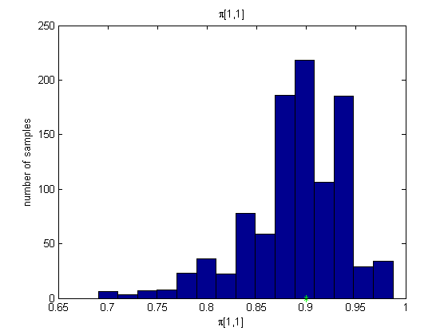
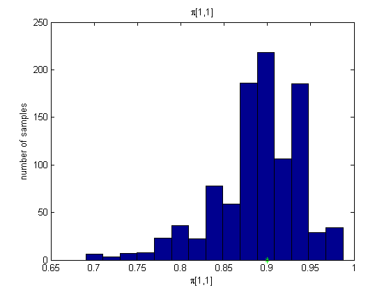 
Posterior mean and quantiles for x
x_pmmh_mean = summary_pmmh.x.mean; x_pmmh_quant = summary_pmmh.x.quant; figure('name', 'PMMH: Posterior mean and quantiles') h = fill([1:t_max, t_max:-1:1], [x_pmmh_quant(1,:), fliplr(x_pmmh_quant(2,:))],... [.7 .7 1]); set(h, 'edgecolor', 'none') hold on plot(x_pmmh_mean, 'linewidth', 3) if sample_data plot(data.x_true, 'g', 'linewidth', 2) legend({'95 % credible interval', 'PMMH Mean Estimate', 'True value'}) else legend({'95 % credible interval', 'PMMH Mean Estimate'}) end xlabel('Time') ylabel('Estimates')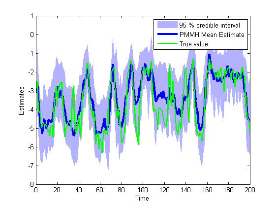
Trace of MCMC samples for x
time_index = [5, 10, 15, 20]; figure('name', 'PMMH: Trace samples x') for k=1:length(time_index) tk = time_index(k); subplot(2, 2, k) plot(out_pmmh.x(tk, :)) if sample_data hold on plot(0, data.x_true(tk), '*g'); end xlabel('Iterations') ylabel('PMMH samples') title(['t=', num2str(tk)]); end if sample_data legend({'PMMH samples', 'True value'}); end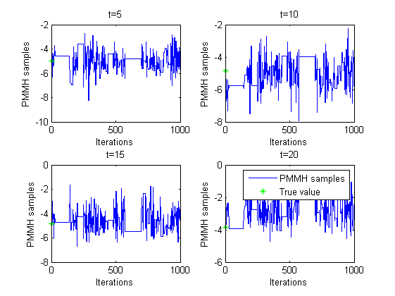
Histogram and kernel density estimate of posteriors of x
figure('name', 'PMMH: Histograms Marginal Posteriors') for k=1:length(time_index) tk = time_index(k); subplot(2, 2, k) hist(out_pmmh.x(tk, :), 15); if sample_data hold on plot(data.x_true(tk), 0, '*g'); end xlabel(['x_{' num2str(tk) '}']); ylabel('number of samples'); title(['t=', num2str(tk)]); end if sample_data legend({'smoothing density', 'True value'}); end figure('name', 'PMMH: KDE estimates Marginal posteriors') for k=1:length(time_index) tk = time_index(k); subplot(2, 2, k) plot(kde_estimates_pmmh.x(tk).x, kde_estimates_pmmh.x(tk).f); if sample_data hold on plot(data.x_true(tk), 0, '*g'); end xlabel(['x_{' num2str(tk) '}']); ylabel('posterior density'); title(['t=', num2str(tk)]); end if sample_data legend({'posterior density', 'True value'}); end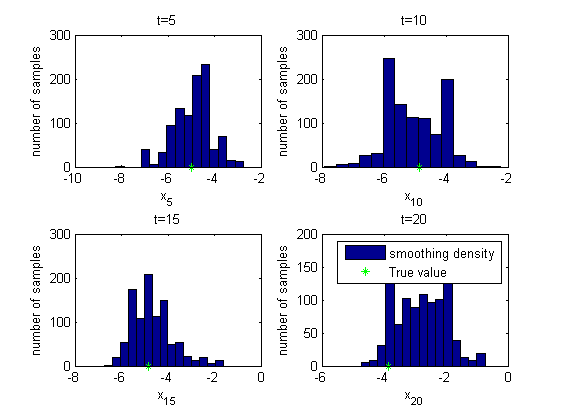 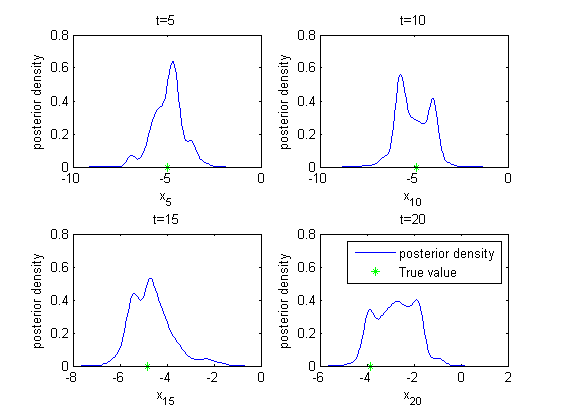
Clear model
biips_clear(model_id)